滝子山
| 日付 | 2007年12月8日（土） |
|---|---|
| 山域 | 大菩薩 |
| メンバー | 単独 |
| 山行形態 | 日帰り |
| アクセス | 電車 |
| ルート (Map) | 笹子駅→寂ショウ尾根→滝子山→桧平→初狩駅 |
駅から直接登ることのできる滝子山へ行く。
登山道はいくつかあるが点線ルートの寂ショウ尾根を選択。
7:13 笹子駅到着。標高605m。
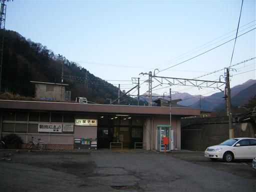
駅から少し歩くと滝子山が見えてくる。
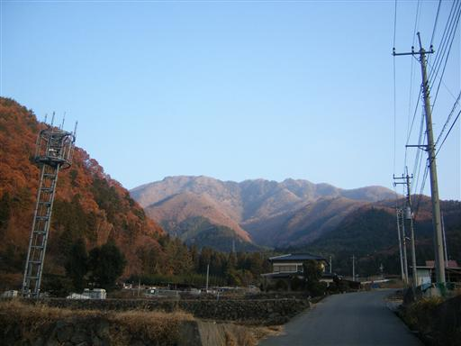
寂ショウ尾根入口に到着。
上級者コースとのことだが、入口にはきちんと標識がある。
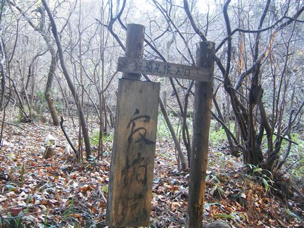
落ち葉が積もる尾根を登っていく。

山頂に近くなると少し岩場が現れる。
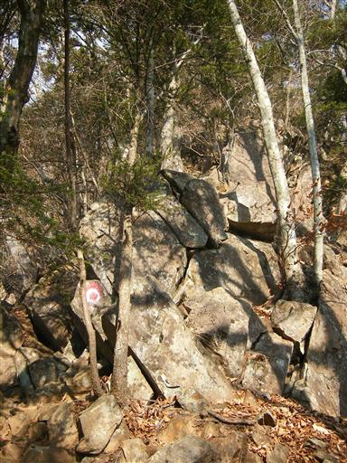
所々に展望のよいところがある。
遠くの方に薄らと南アルプスが見える。
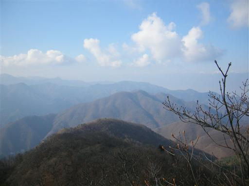
10:11 滝子山山頂到着。標高1620m。
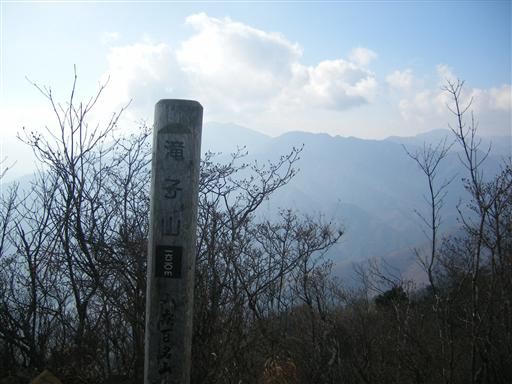
山頂からの展望。大菩薩連嶺方面を望む。
残念ながら今日は富士山が見えない。
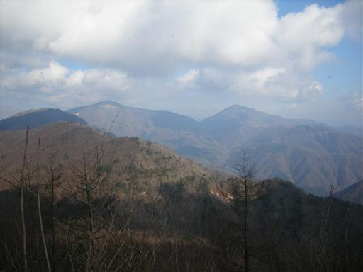
山頂部は狭いが比較的静か。

滝子山の三角点は山頂から少し下った1590m地点にある。
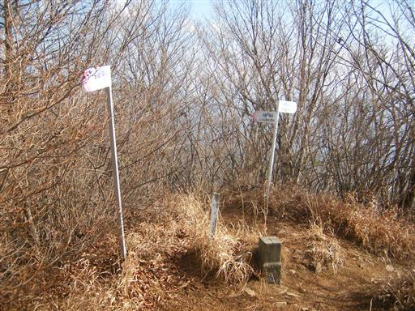
下山開始。
少しひらけた桧平に到着。
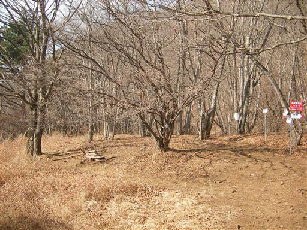
迷彩服のような模様の木を発見。
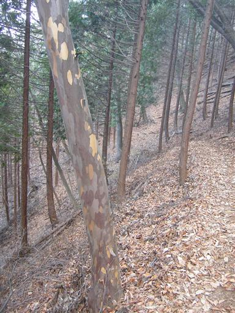
下山道は途中から沢沿いの道になっている。
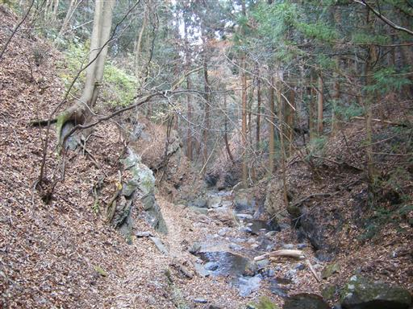
落石注意や、滑落注意の看板はよく見るが、
枯木に注意というのは初めて見た。
そんなのに当たったという人は聞いたことがないが…
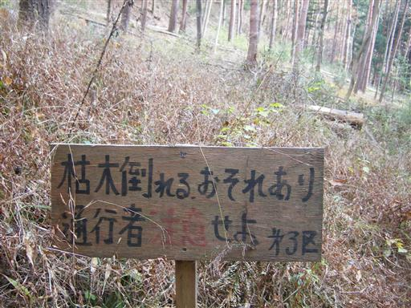
下山。
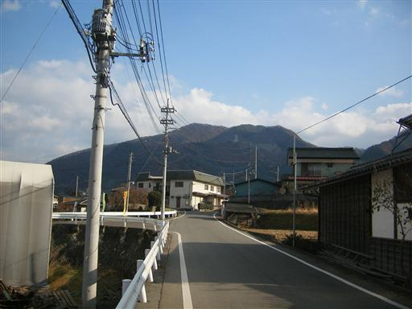
13:32 初狩駅到着。標高460m。
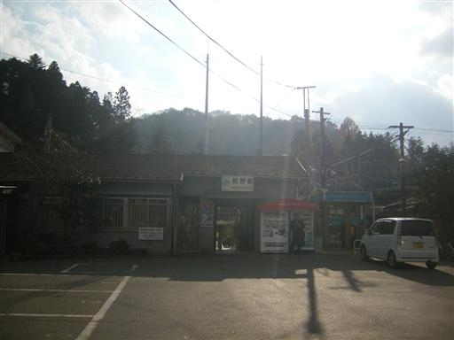
他の山行記録